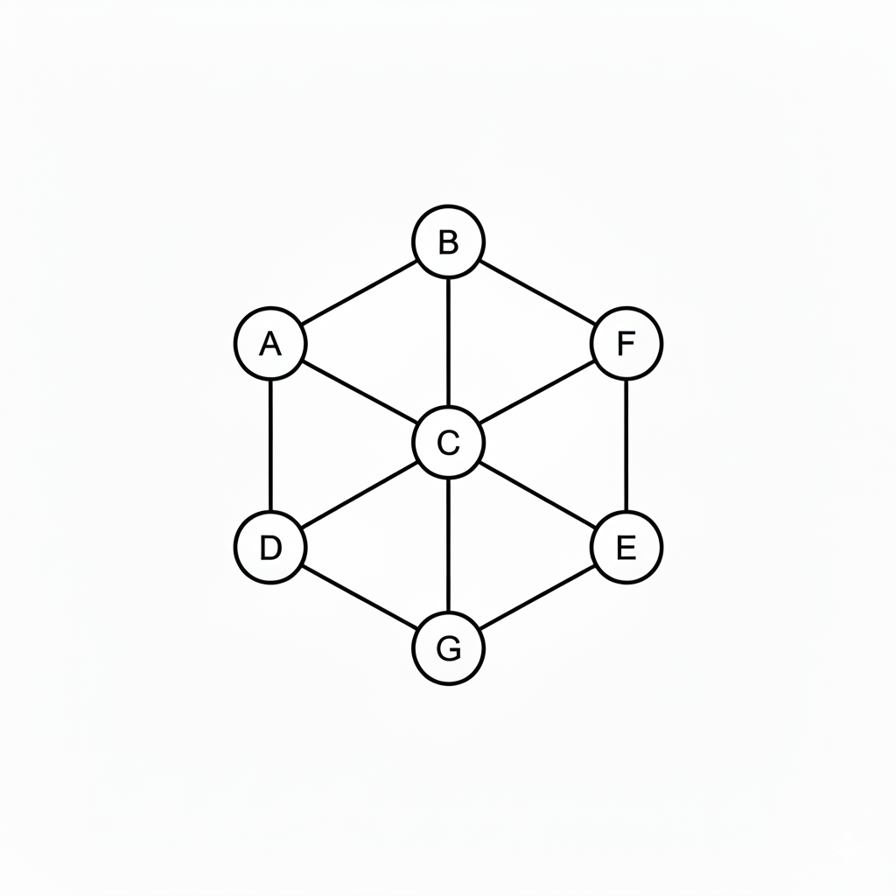
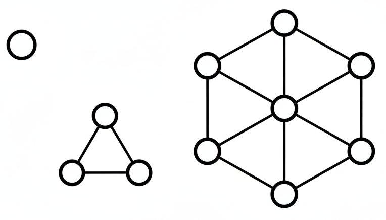
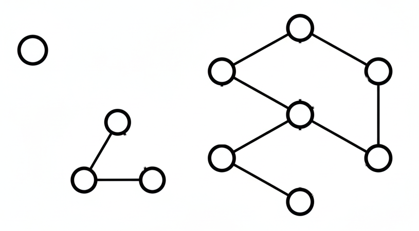

class: center, middle, title-slide # CSCI-UA 102 ## Data Structures <br> ## Graphs - Finding Connected Components .author[ Instructor: Joanna Klukowska <br><br><br> ] .license[ Copyright 2025 Joanna Klukowska. Unless noted otherwise all content is released under a <br> [Creative Commons Attribution-ShareAlike 4.0 International License](https://creativecommons.org/licenses/by-sa/4.0/).<br> Background image by Stewart Weiss<br>] --- layout:true template: default name: section class: inverse, middle, center --- layout:true template: default name: breakout class: breakout, middle --- layout:true template:default name:slide class: slide .bottom-left[© Joanna Klukowska. CC-BY-SA.] --- ## Connected Components in a Graph A __connected component__ (or simply a component) of an undirected graph is a subgraph in which any two vertices are connected to each other by paths, and which is connected to no additional vertices in the supergraph. - In simpler terms, if you can get from any node in a component to any other node in the same component, and you can't get out of that component to another part of the graph, then it's a connected component. -- .left-column2[.center[  ]] -- .right-column2[.center[   ]] --- ## Why do we care about connected components? -- __Social Network Analysis__: - Community Detection: Identifying groups of tightly knit individuals in a social network. Each connected component could represent a distinct community or isolated group. - Influence Propagation: If information or a virus spreads through a network, it will only spread within its connected component. This helps in understanding the potential reach of information or disease. - Identifying Disconnected Users: Finding users who are completely isolated from certain groups or the main network. -- __Network Reliability and Redundancy (Computer Networks)__: - Server Clusters: If a network representing server connections has multiple connected components, it means that some servers cannot communicate with others. This indicates a critical fault or partitioning in the network. - Resilience Planning: Understanding connected components helps in designing more robust networks by ensuring critical nodes are part of a well-connected component and identifying single points of failure that could split the network into multiple components. --- ## Why do we care about connected components? __Transportation and Logistics__: - Road Networks: Identifying if all cities or regions are reachable from each other. If the graph of roads has multiple connected components, it means some areas are completely isolated from others by road. - Airline Routes: Determining which airports are connected within a single airline's network or across multiple partner airlines. -- __Ecosystem Modeling__: - Habitat Connectivity: In ecological studies, graphs can represent patches of habitat and the corridors connecting them. Connected components identify areas where species can move freely, which is crucial for conservation efforts. - Disease Spread: Similar to social networks, understanding how connected components in an ecosystem relate to the spread of disease among animal populations. -- __and many more ...__ --- ## Finding Connected Components -- The most common algorithms to find connected components in a graph are Depth-First Search (DFS) and Breadth-First Search (BFS). Both algorithms can be adapted to identify all connected components. -- The general approach is as follows: - Initialize a `visited` array for all vertices to `false`. - Iterate through each vertex `v` in the graph. - If `v` has not been visited: - Start a DFS (or BFS) from `v`. This marks all vertices reachable from `v` as visited. - All vertices reachable from `v` during this traversal belong to the same connected component. - Store this set of vertices as a new connected component. Continue until all vertices have been visited. </optgroup>